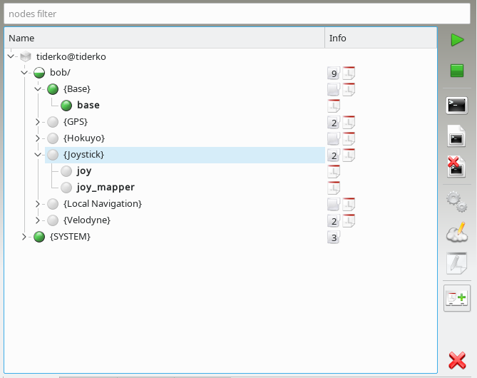

The capability_group parameter adds a node to a specified group:
<node name="node_manager" pkg="node_manager_fkie" type="node_manager">
<param name="capability_group" value="Management"/>
</node>
Since for a node no local capability_group parameter is found a capability_group parameter in nodes namespace will be assigned to the node. In this manner it is possible to add multiple node by using only one parameter, e.g.:
<param name="capability_group" value="Joystick"/>
<node name="joy" pkg="rostopic" type="rostopic" args="pub joy std_msgs/String -r 1 'joy'" />
<node name="joy_mapper" pkg="rostopic" type="rostopic" args="echo joy"/>
It is possible to add a node to multiple groups using a prefix for capability_group, e.g.:
<node name="node_manager" pkg="node_manager_fkie" type="node_manager">
<param name="capability_group" value="Management"/>
<param name="1.capability_group" value="Node Manager"/>
</node>
The description of a capability group is stored in a global capabilities parameter. This parameter is defined as rosparam and contains the list with all groups and their description. To describe a group adds a list with group name, group type, image and description. image is a relative path to node_manager_fkie package unless you use $(find PACKAGE). The description can be coded as reStructeredText and contains also image references relative to node_manager_fkie package path or with $(find PACKAGE). Since after loading the XML the new line separators are removed, you must enter \n to insert a new line.
<rosparam param="capabilities">
[
["Management",
"core",
"$(find node_manager_fkie)/images/crystal_clear_app_network2.png",
"The ``management`` group provides nodes needed to detect and synchronize
other robots in the ROS network. These are:\n\n- Node Manager\n- Master
Discovery\n- Master Synchronization"
]
]
</rosparam>
The capability group do not change the namespace of the included ROS nodes.
Further parameter robots describes in same manner the robots. The list must contains host name, robot type, displayed name, image and description:
<rosparam param="robots">
[
["tiderko",
"Workstation",
"tiderko",
"$(find node_manager_fkie)/images/veryicon_devcom_workstation.png",
"Workstation\n\n|ws|\n\n.. |ws| image::
$(find node_manager_fkie)/images/veryicon_devcom_workstation.png\n"
]
]
</rosparam>
This description will also shown in Description Dock.